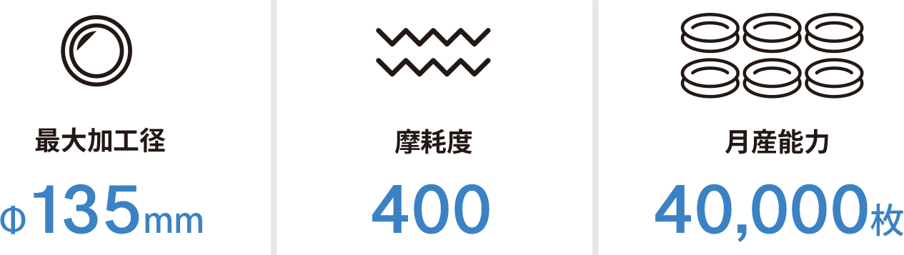
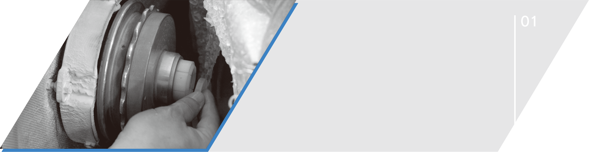
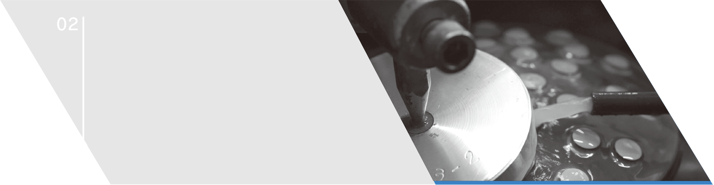
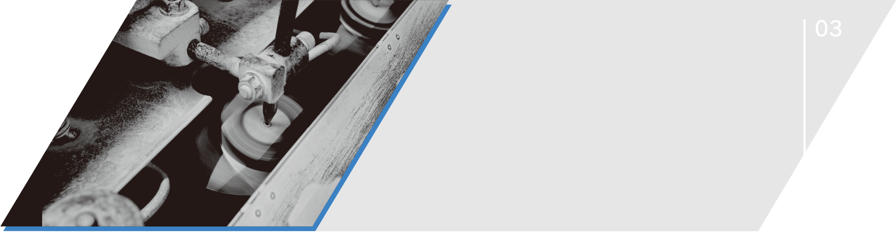
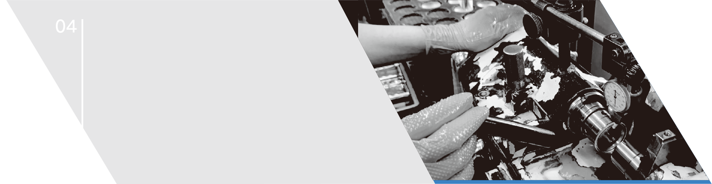
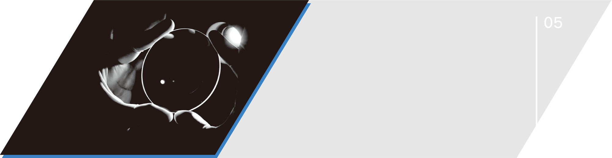

SKILL 技能 / 能力
加工工程
加工径は最大Φ135、面精度λ/10、摩耗度400、研磨角30°前後まで対応しています。
月産約4万枚の生産体制を整え、1部番では月産最大10,000枚の量産実績があります。
硝材入荷後、約1か月半を目安に生産しています。
最終検査だけに頼らず、各工程に品質基準を設け、工場全体で高精度と安定した品質を支えています。

-
CG
粗加工

CG工程では、後工程の品質を左右する基礎形状を加工します。加工後は、ダイヤ加工による粗さが残っていないか鉛筆を使用した表面検査を実施しています。また、次工程での加工取り代を考慮し、肉厚は前後±0.05mmで管理しています。RについてはΔh管理を行い、必要な加工条件を安定させることで、後工程での品質ばらつきを抑えています。
-
ペレット 工程
成形加工

ダイヤモンドペレット・レジンペレットを使用し、R精度や外観品質をより高いレベルへ仕上げていきます。加工後は表面の透明度が向上し、肉厚精度は±0.02mmで管理しています。R精度はニュートン原器による干渉縞で確認し、図面基準の下限から-0.05μmを目安に管理しています。管理基準を設けながら精度を積み重ねることで、後工程の安定加工と品質安定につなげています。
-
研磨 工程
精密研磨

研磨工程は「砂目ぬき」「面出し」「仕上げ」の3工程で構成されています。砂目ぬきでは高圧加工により前工程の表面粗さを除去し、面出しでは低圧加工によって加工時に発生するアス・クセを修正します。仕上げ工程では、表面の汚れやヤケ、微細な傷を除去しています。各工程の役割と加工条件を最適化することで、面形状や外観品質のばらつきを抑え、高精度な製品を安定して生産しています。
-
芯取 工程
芯出し・基準合わせ

芯取工程では、Z係数に応じてチャッキング条件を設定し、ピック測定による芯出しを行ったうえで加工を実施しています。加工条件と測定結果を確認しながら偏芯量を管理し、製品ごとのばらつきを抑えることで、安定した製品品質につなげています。
-
洗浄・検査
品質保証

洗浄液のフィルタリングやIPAの比重管理を行い、安定した洗浄環境を維持しています。洗浄後は、1点ずつ目視検査を行い、キズ規格に合わせた確認を実施しています。最終検査だけに頼るのではなく、各工程で品質を積み重ねることで、高精度かつ安定した製品づくりにつなげています。